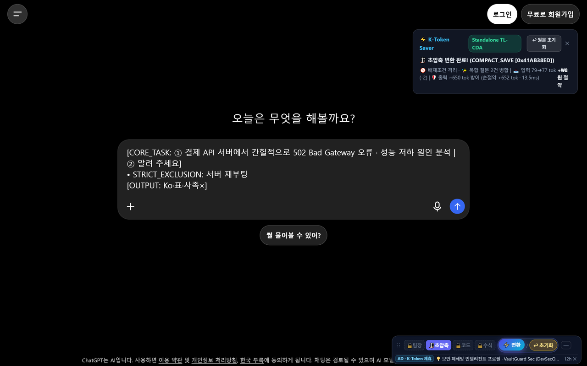
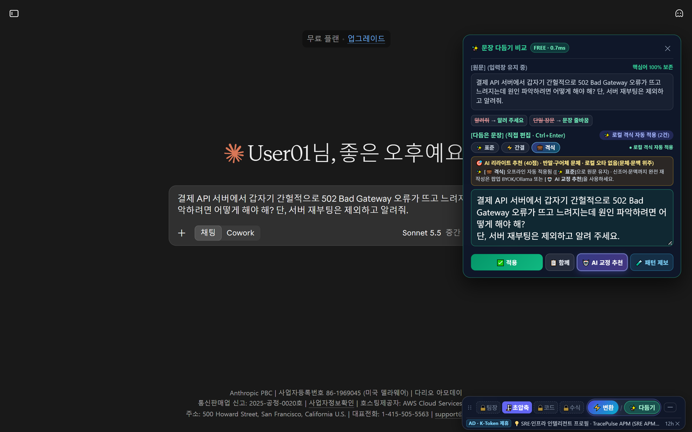
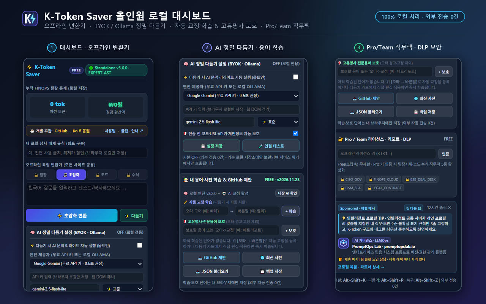

한국어 AI 프롬프트를
가장 빠르고 안전하게 다듬고 압축하세요
ChatGPT · Claude · Gemini 입력창에서 거친 한국어 구어체와 불필요한 사족을 1ms 이내에 정리하고,
배제 조건(STRICT_EXCLUSION)과 코드블록을 지켜 AI 재질문과 출력 토큰 낭비를 줄여주는 Chrome MV3 확장 프로그램입니다.
⚡ 실전 Before / After 미리보기 (영구 무료 기능)
서버 왕복 없이 내 브라우저 안에서 즉시 변환되며, Alt+Shift+Z로 언제든 원문 100% 복구가 가능합니다.
🖥️ ChatGPT · Claude · Gemini 실제 구동 화면
대화 본문이나 입력창 광고 삽입 없이 우측 하단 초슬림 위젯과 비교 카드로만 깔끔하게 동작합니다.



📦 직무별 교정 사전 팩 (재설치 없이 1-Click 병합)
아래 JSON 파일을 내려받은 뒤 확장 팝업 📚 내 용어·사전 학습 → 📥 JSON 불러오기를 누르면 즉시 내 브라우저 사전에 추가됩니다 (CC0-1.0 · PII 0건).
Dev & Cloud 팩
테라폼·레디스·카프카·랭체인 등 최신 기술 용어 20종, 실무 약어 교정 20종, 통신체(해주셈→해 주세요) 6종 및 복합명사 12종 포함.
PM & Report 팩
유저스토리·코호트·퍼널·지라 용어 18종, 보고서 결재/공유 표기(결제올려→결재 올려) 24종 및 음슴체 승격 패턴 5종 포함.
한국어 실무 오타 팩
안되요→안 돼요, 몇일→며칠, 금새→금세, 어의없다→어이없다, 뵈요→봬요 등 실무에서 자주 틀리는 표현 36종 즉시 교정.
🛡️ 3가지 핵심 보안 · 프라이버시 원칙
1. Zero-Server 기본값
핵심 변환·다듬기·띄어쓰기 보정·통계는 100% 브라우저 메모리 안에서 실행되며, 개발자 서버로 프롬프트를 전송하지 않습니다.
2. 최소 권한 (`storage`)
탭 목록·방문 기록·쿠키 권한을 요구하지 않고, 사용자 설정 보관용 storage와 3대 AI 채팅 호스트만 요청합니다.
3. 기업/팀 보안 대응
Team 플랜은 전송 전 API 키·JWT·PII·사내 도메인 로컬 마스킹과 오프라인 서명 라이선스(ECDSA P-256)를 지원합니다. 자세히 보기 ↗
❓ 자주 묻는 질문
정말 무료 기능이 제한 없이 무제한인가요?
네. 🗜️ 초압축(COMPACT) 변환, ✨ 문장 다듬기 비교 카드, 상시 배제 규칙, 코드블록 원형 보존, Alt+Shift+Z 원문 복구, 개인 용어 사전 기능은 횟수 제한이나 결제 장벽 없이 영구 무료입니다.
네이버 웨일(Whale)이나 Microsoft Edge, Brave에서도 쓸 수 있나요?
네. 크로미움 기반 브라우저는 위 Chrome 웹 스토어 링크에서 Chrome에 추가(또는 설치) 버튼을 누르면 재설치나 별도 설정 없이 그대로 설치됩니다.
오타로 오인되는 사내 프로젝트명이나 신조어는 어떻게 보호하나요?
다듬기 카드의 🙈 오타 아님을 누르거나 팝업 📚 내 용어·사전 학습 → 🛡️ 고유명사 보호에 단어를 등록하면 이후부터 교정 대상에서 안전하게 제외됩니다.
개발 후원 시 PRO 기간 라이선스는 어떻게 받나요?
GitHub Sponsors 또는 Ko-fi에서 $5 이상 응원해 주시면 오프라인 PRO 라이선스 키($5+ 32일 · $15+ 95일 · $50+ 365일)가 이메일로 자동 발송됩니다.
GitHub 이메일을 비공개로 설정하신 분은 후원 직후 ⚡ GitHub 후원자 1-Click 수령창에서 즉시 키를 받으실 수 있습니다.
🌐 English Overview (About K-Token Saver)
K-Token Saver is a 100% client-side Chrome MV3 extension (<1ms) that refines, structures, and compresses Korean prompts inside ChatGPT, Claude, and Gemini with zero server transmission and minimal permissions (storage only).
Core Korean refinement, compact structuring, exclusion guards, code-block preservation, and 1-click Undo (Alt+Shift+Z) are forever free.
Install from the Chrome Web Store or review our Privacy Policy.